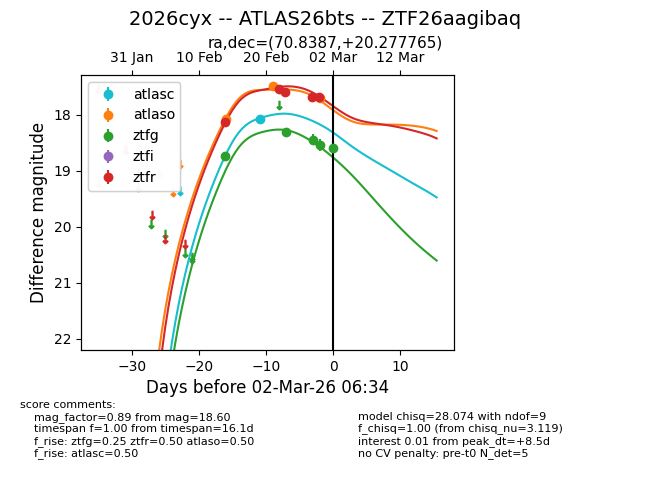
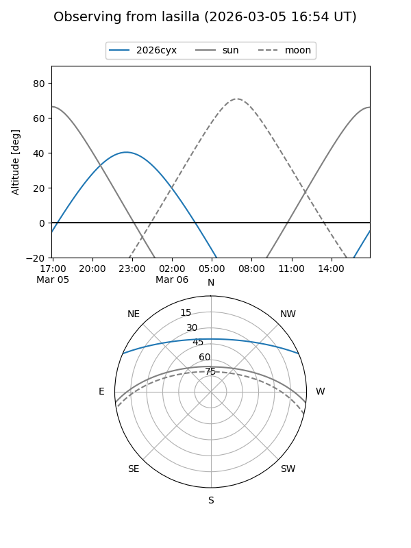
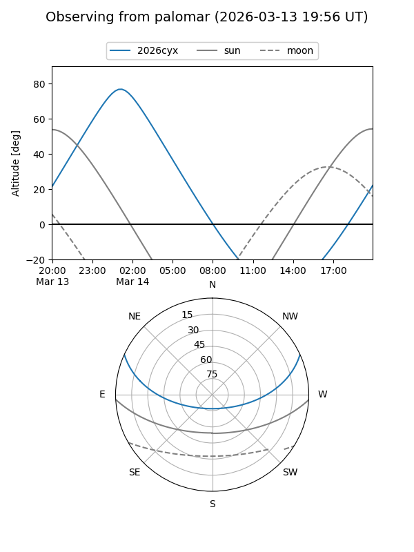
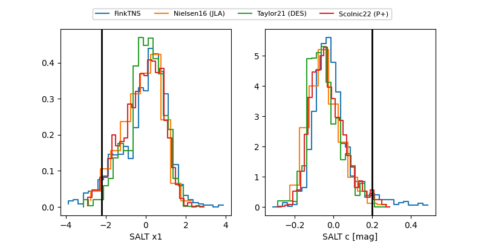

2026cyx
Target 2026cyx at 2026-03-02 06:35
Aliases and brokers:
FINK: link
Lasair: link
ALeRCE: link
TNS: link
YSE: link
alt names
ZTF26aagibaq (ztf,fink_ztf)
2026cyx (tns,yse)
ATLAS26bts (atlas)
Coordinates:
equatorial (ra, dec) = 70.8387,+20.27776
equatorial (HMS+DMS) = 04:43:21.29,+20:16:39.95
galactic (l, b) = (178.9918,-16.53602)
Flags:
Photometry:
last atlasc=18.08, atlaso=17.70, ztfg=18.60, ztfr=17.67
1 atlasc, 3 atlaso, 5 ztfg, 5 ztfr detections
Lightcurve

Visibility


Additional plots
